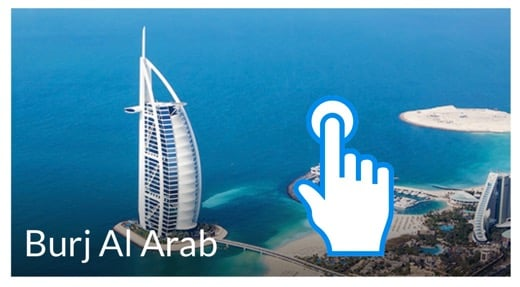
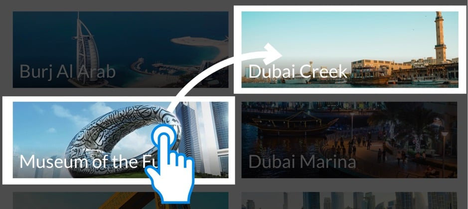

ميزة “My Dubai" تساعدك على التنقل في مناطق الجذب السياحي الرئيسية في دبي بأسرع وأبسط طريقة.
يمكنك استخدام هذه الميزة بطريقتين:
- فقط اضغط على إحدى الصور لتخطيط طريق من موقعك الحالي.

- قم بالسحب والإفلات من أي صورة إلى أي مكان على الشاشة للتخطيط للرحلة.
